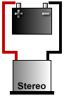
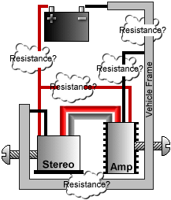

· What exactly is a ground loop?
(Entry last updated on February 22nd, 2002)A ground loop is what happens when the electricity that's supposed to be powering your audio equipment flows through the audio circuitry instead of through the power circuitry.
This happens in car stereos quite often, because cars use DC power, which is notoriously hard to ground properly. The more components you add to a car stereo system, the more chance you will cause a ground loop. In fact, for each component you add, the likelihood of a ground loop goes up exponentially.
Ground loops sound like noise coming out of the speakers. Humming, buzzing, whining, clicking, popping... all of these kinds of noises can be caused by an ordinary ground loop. Almost all noise problems in car stereo installations are caused by ground loops. For instance, the common term "alternator whine" makes it sound like the problem is the alternator, but usually the real source of the problem is a ground loop.
Note: In the discussion below, I will only show you what a ground loop is. I will not discuss the ways to fix it. That, I'll leave up to the experts. Click here to find some links to documents that will help you troubleshoot a ground loop problem.
Anatomy of a ground loop:
|  |
In a perfect world of pretty flowers and little fluffy bunnies, the only thing we'd have to deal with is a single 12-volt positive connection and a single 12-volt negative connection.
|
 |
The electrons (which are the electrical energy) have to move between the poles of the battery. That's why the two connections are needed. Without this path, they will go nowhere and no energy is transferred.
This path can happen through any piece of conductive material, such as wire or sheet metal. Note that this diagram is simplified; you will usually see car audio components grounded to a metal point on the chassis of the car, rather than through an actual wire running to the battery.
In this perfect little world, the electrons would only have one path to follow. Nice, simple, easy.
|
 |
Unfortunately, we don't live in a perfect world. As soon as you add an extra amplifier, even the simplest of installations has the potential to create a ground loop.
In the illustration at left, all we've done is add an amp. This has doubled the number of connections to the car's electrical system, and added an additional set of audio connections between the amplifier and the stereo. And this is an over-simplified illustration, it doesn't even illustrate all of the other possible connection points, such as the ignition-sense, the headlight illumination, the amp remote, the cell phone mute, etc.
|
 |
Even this simple system can cause a ground loop. If the electrons powering the stereo decide that their path between the poles is better via the amp instead of via the stereo, they will use the audio cables as their path.
THIS IS THE GROUND LOOP, the thing indicated by the arrow in the illustration. The main power is using the audio cables instead of the power wires to move between the poles of the battery.
Note that this is only one possible way for a ground loop to develop in this system. For instance, maybe it might happen opposite from what's shown here. Maybe the electrons can move along the stereo's ground wire just fine, but it's the amp's ground wire that they're ignoring.
|
When this happens, your stereo's audio output circuity suddenly becomes part of your car's electrical system. Every single thing in your car that interacts with the electrical system will be amplified by your stereo. The alternator, the spark plugs, the air conditioner, the headlights, the brake lights, the car's emissions-control computer, the stereo's electronics, the electric motor that spins the CD in your CD player (or spins the hard disk in your MP3 player), everything. All of these things will suddenly cause non-musical noise to come out of your speakers.
But why does this happen?
Because somewhere in the system, there is electrical resistance on one or more of the connections which is greater than the electrical resistance found via a path through the audio cables. The electrons take the route that's got the least resistance.
In the illustration above, one of the connections doesn't have a good solid ground. Can you locate the place where the ground needs to be improved? (Hint, it's where the electrons aren't flowing.)
|  |
Once you put the frame of the car into the equation, things get even more dicey. Even in this over-simplified diagram, there are several places where resistance could crop up, each one of which could cause a ground loop. Some of them aren't even labeled in the picture. Can you spot them?
When you troubleshoot a ground loop, your job is to locate and eliminate each possible trouble spot, each point of possible resistance. In a complex system with multiple components, this becomes very difficult.
It's painstaking work, because resistance can be caused by about a million different things: Loosely crimped connections, bad solder joints, frayed wires, loose screws, just about anything can increase resistance. Even something as simple as using a different gauge of wire for your various power and ground runs can cause a ground loop.
|
And remember that these illustrations are oversimplified. Every single connection point on your stereo can potentially be the source of a ground loop, even when everything is connected correctly. For instance, a common source of ground loop problems is the radio antenna wire, and it's often overlooked. Or perhaps you've used the power and ground connections from your factory radio harness... do you really know every possible failure point of that factory wire along its entire length between the connector and the battery? I know that in my car, I certainly don't.
Then there's the common problem of multiple simultaneous failures... you think you've nailed it because you fixed one loose wire, but there's still noise because of another problem you missed somewhere else. You have to be absolutely methodical with your procedures when locating a ground loop, to make absolutely sure you didn't miss anything.
Okay, now that you know what a ground loop is, you can start working on a solution to the problem. Click here to find some links to documents that will help you troubleshoot a ground loop problem.
|